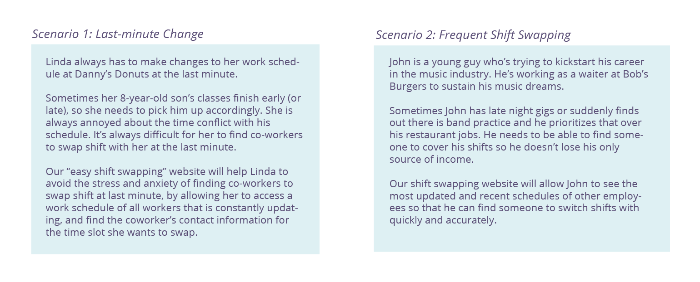
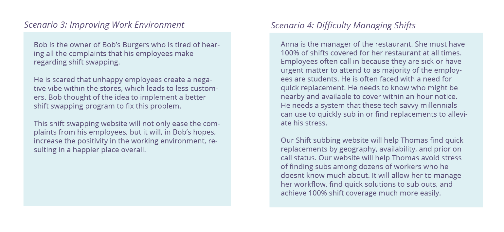
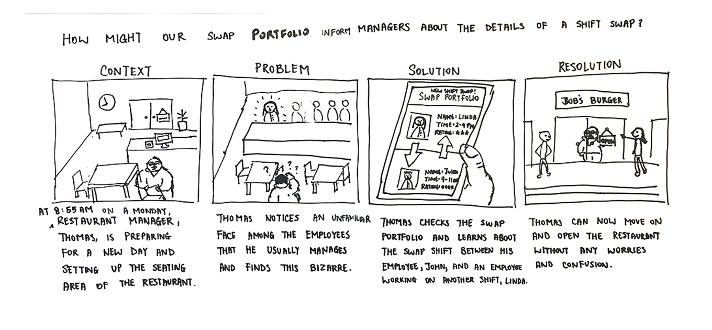
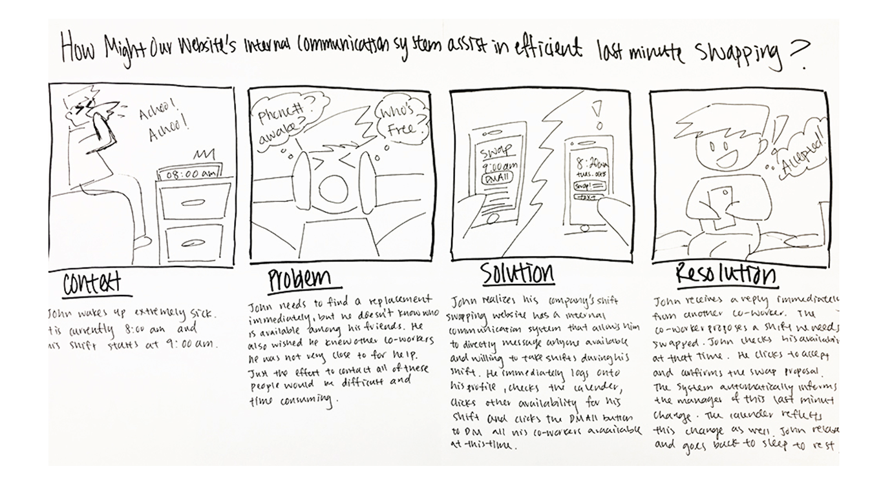
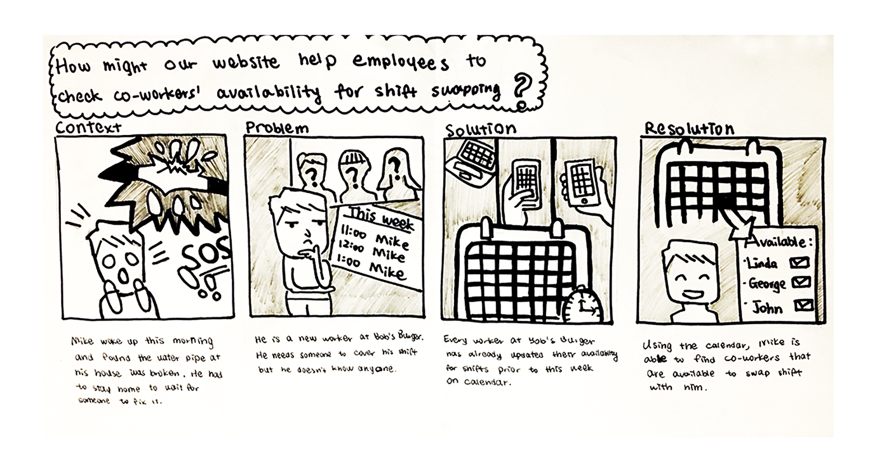
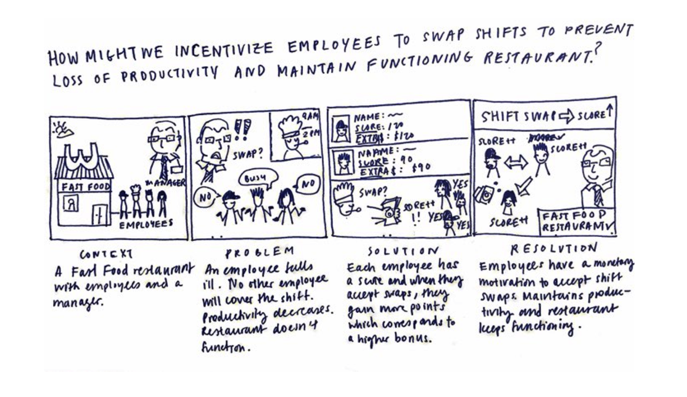
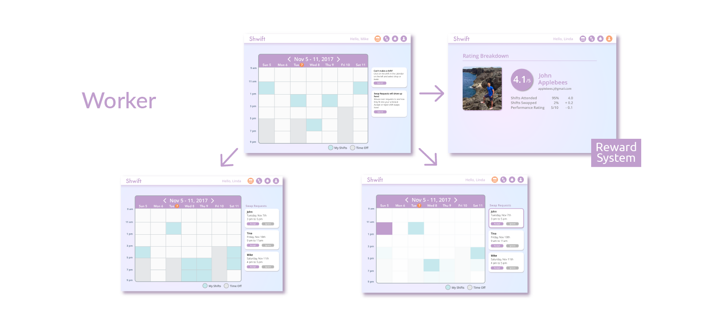
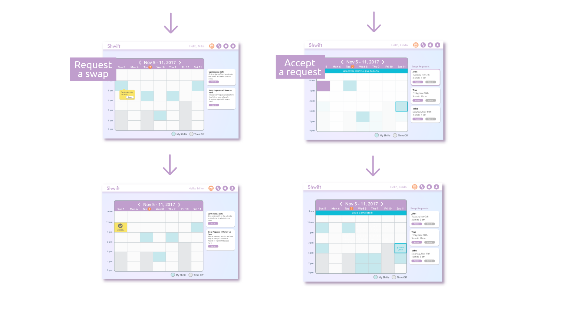
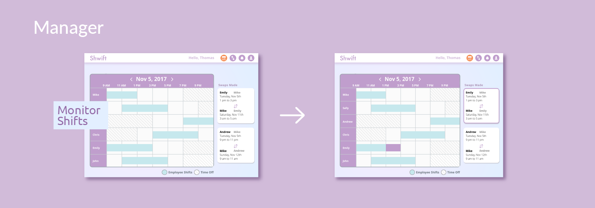

User Research, Storyboarding, Wireframing, Digital Prototyping, User Testing
Time Span: March - April 2017
Team: Christina Jin, Nicholas Chung, Hayeon Kim, Anni Zhang
What we did
Peer economy grows rapidly with the fast development of technology. Some well-known examples are Uber (car rides) and Airbnb (hotels). In this design challenge, we build a responsible web application, Shwift, to eliminate the painpoints in the process of shift swapping and improve the work efficiency for employees and relevant stakeholders at local restaurants.
Research
User Scenarios
We started our design by researching the problem domain. In this step, we went to local restaurants nearby neighborhoods and interviewed multiple restaurant owners, managers, and employees. After hearing about their experience with shift-swapping, we created user scenarios to reflect the current problems they are facing. These scenarios illustrate a co-production of values for different user groups. Along with personas, these scenarios help us model the real-world needs and wants of users, as well as the pain points in the current system of shift swapping.
 Stakeholder Map
When designing the interface for shift-swapping, we identified three main groups of stakeholders: restaraunt owners, employees, and workers. All parties seeks different benefits from the system, and they exert different levels of influence on the implementation. Creating the stakeholder map allows us to evaluate:
- who are most interested / benefits the most from the system?
- What problems should we prioritize to eliminate the current painpoints for the main user group?
- who is responsible for managing and maintaining the system, and why are they incentized to do so?

Storyboards
We then proceeded to making key interaction scenarios using storyboards. These storyboards are shows the desired solution for each problem faced by users currently. They are closely related to the desired outcome that our solution will bring to the problem context.
   Design Process
UI Components and Features
Currently, workers are unable to see the schedules of other workers. Finding people to swap shifts can be time-consuming and stressful. On the other hand, although managers have access to the full schedule, they are unable to view last-minute changes. Consequently, oftentimes they have trouble knowing and locating who is responsible for what time after shift swapping.
Thus, we choose a dynamic calendar design that allows the transparency of work shifts from worker to worker, and between the manager and workers. We also consider that many users are already familiar with the calendar design from IOS and Google. Such user familiarlity allows them to quickly adjust to the system.
Another pain point of the current system is the lack of incentives for workers to take shifts. To solve this issue, we created a reward profile for workers in the system. Each worker would receive reward and collect points if they accept extra shifts and show up in a timely manner. The reward program is linked to each employee's bonus, and can be used for evaluation by managers.
We also take the advantage of innovative technology in our solution. Whenever multiple people wants to take the same shift, the system uses maching-learning algorithm to match the shift with the worker based on employee profile and real-time location.
Testing
Using the lo-fi wireframes, we conducted several rounds of speed-dating with targeted users. Speed dating enables us to quickly detect usability issues in site navigation, styles, etc. Each session starts with a task-orinted testing, in which we let the users perform the following tasks mainly associated with shift-swapping:
- Dropping a shift
- Seeing a shift swap request and accepting the request
- Pending request, undo shift change
Style Guide

Final Solution
Website Flow
  Value Creation
The key features of Shwift satisfy the needs of both employees and managers.
- Instant company-wide requesting helps employees find a swap as soon as possible while the point incentive system motivates employees to accept swap requests. To streamline the process, we also have an algorithm that automatically matches employees based on their schedules.
- For managers, they are now able to monitor their staffs’ schedules all on one page and easily track swaps through swap notifications and swap overview.